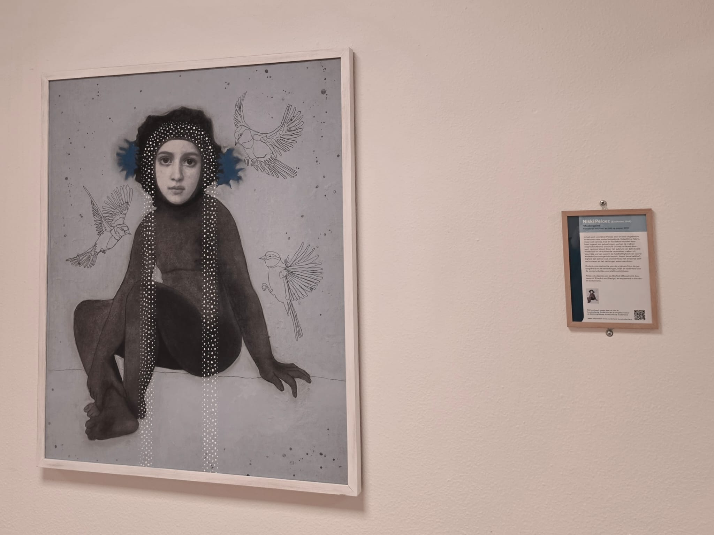
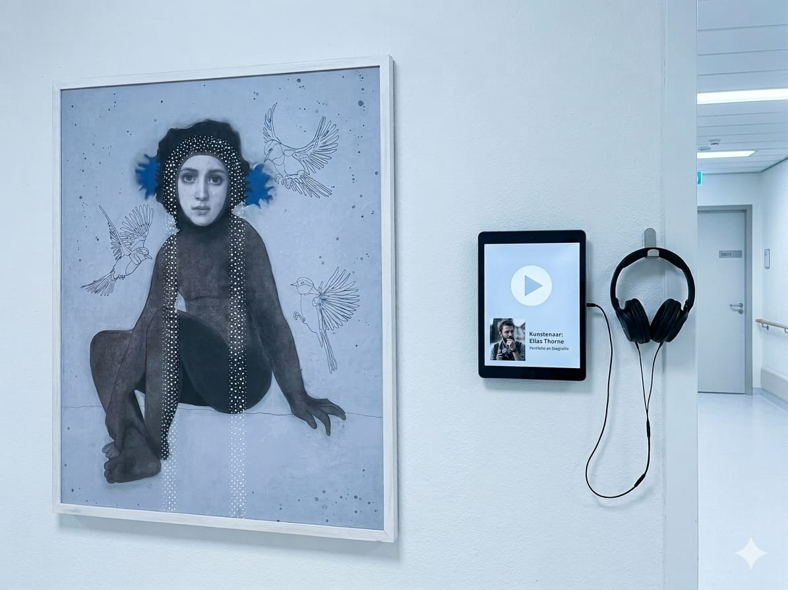
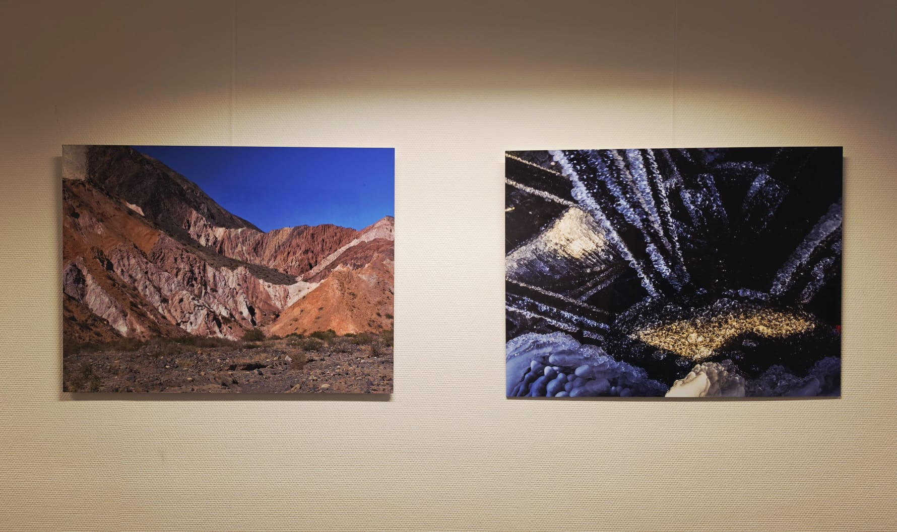
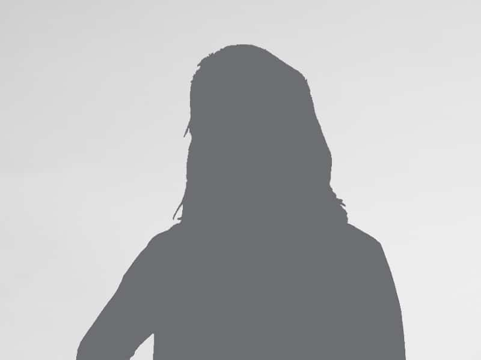

De Aanleiding & Mijn Missie

Kunst nu
Mijn ideeGebrek aan Inspraak
Mijn missie is niet om mensen te leren wat 'mooi' is, maar om een interactieve interface te ontwerpen die de kunst teruggeeft aan de mensen die er werken en verblijven.
Probleemanalyse & De "Rebellie"
Het Behang-effect
Kunst wordt na twee weken onzichtbaar.
De Rebellie
Personeel op de IC en KNO regelt eigen kunst buiten de commissie om. Dit is geen onwil, maar een behoefte aan autonomie.
Wat heb ik geleerd?
'Wildgroei' is eigenlijk een keihard signaal van een gebrek aan participatie.

IC — 10 jaar "illegale" foto'sDe Wetenschappelijke Fundering
Design
Roger Ulrich
Theorie over Positive Distraction. Kunst moet stress verlagen. Als medewerkers zich ergeren aan kunst ("shitkunst"), werkt het averechts.
Malkin
Benadrukt dat de omgeving de patiëntveiligheid en het welzijn van personeel beïnvloedt.
Deep Dive: Gesprek met José
😂 Humor
Is een cruciale 'coping mechanism' op zware afdelingen als de IC.
👤 De Mens achter de jas
Medewerkers willen zichzelf herkennen. "Wat vindt mijn collega hiervan?"
🎧 Toegankelijkheid
QR-codes naar saaie websites werken niet. Men wil 'snackable' audio (max 30 sec).
🔄 Afwisseling
"Elke maand iets anders, dan blijf je kijken." Rotatie voorkomt het behang-effect.

Ontwerpeisen (Programma van Eisen)
Low Friction
De interactie mag de zorgtaak niet hinderen (max 60 sec per interactie).
Multimodaal
Audio-optie ('lean-back') voor drukke momenten, tekst voor rustige momenten.
Cyclisch
Het systeem moet rotatie forceren om het 'behang-effect' te voorkomen.
Transparant
De drempel naar de kunstcommissie moet verdwijnen via de interface.
Het Concept: Het Interactieve Stem-model
Commissie cureert
De kunstcommissie selecteert een shortlist van 3 werken.
Afdeling stemt
Personeel & patiënten beslissen via een iPad wat er komt te hangen.
Ownership
Als je mee mag beslissen, waardeer je het resultaat meer — ongeacht smaak.
User Journey: Een verpleegkundige stemt tijdens haar koffiepauze op het kunstwerk dat het best past bij de sfeer van haar afdeling.
Het Prototype (Demo)
Inzichten uit Content-redactie
"Dit meesterwerk manifesteert de existentiële dialectiek tussen licht en schaduw, waarbij de kunstenaar een sublieme visuele narratief weeft..."
"Jesse fotografeert de stilte op de IC. 'Ik zag hoe het licht door het raam viel op een lege stoel. Dat raakte me.' Wat vind jij?"
Geleerd
Kunsttaal is vaak te elitair. Door teksten te herschrijven naar een "warme, nuchtere toon" verlaag ik de drempel voor de gebruiker.
Validatieplan & Volgende Stappen
Vragen voor validatie:
Begrijpen ze de stem-optie zonder uitleg?
Triggeren de collega-quotes een gesprek?
Is 30 seconden audio inderdaad de 'sweet spot'?
De "Arno-vraag" (Sparren)
"Ik heb nu de participatie aan de voorkant (het kiezen) opgelost. Hoe zorg ik ervoor dat dit model op de lange termijn niet óók behang wordt?"
Bedankt voor jullie tijd. Laten we kunst weer van de mensen maken.